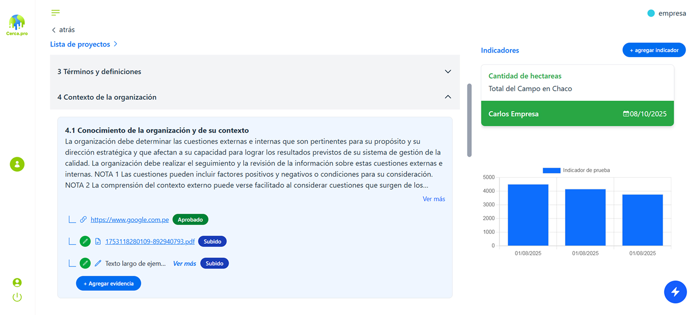

Todo empezó con una pregunta incómoda pero necesaria:
¿Por qué tantas empresas hacen enormes esfuerzos por cumplir normas, planes o estándares… pero no logran sostenerlos, demostrarlo ni convertirlos en valor real?
Habíamos visto de todo: certificados colgados en la pared como trofeos olvidados, planillas sueltas en carpetas compartidas, métricas desordenadas, evidencias guardadas en mails perdidos y equipos que trabajaban mucho, pero sin poder mostrar con claridad su impacto.
Fue entonces cuando decidimos crear
Una plataforma pensada no para cumplir “por cumplir”, sino para transformar la gestión de calidad, sostenibilidad y cumplimiento en una experiencia estructurada, transparente y poderosa.
“ Porque creemos que llegar a la cima no se trata solo de subir, sino de alcanzar cada punto clave del camino, con evidencia, con método y con visión. ”
En cerca.pro diseñamos una herramienta que hace simple lo complejo:
Donde cada proceso deja huella.
Donde cada evidencia cuenta.
Donde los indicadores no se cargan porque “hay que hacerlo”, sino porque dicen algo importante.
Donde un asistente de IA no reemplaza personas, sino que potencia su capacidad de lograr más con menos esfuerzo.
Trabajamos para empresas que entienden que la calidad, la sostenibilidad y la mejora continua no son un proyecto puntual, sino una forma de gestionar con propósito y reputación.